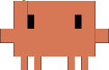

10:10–10:40강의30분
INTROClaude Code 아키텍처 소개
에이전트 루프 → 맥락과 도구 → 이틀의 학습 지도
에이전트가 맥락을 읽고 도구를 고르며 결과를 다시 판단하는 구조부터 살펴봅니다. 이후의 설정, 권한, 자동화가 어느 부분에 적용되는지 이해하고 워크샵을 시작합니다.

Claude Code Deep Dive WorkshopClaude Code를 개인의 도구에서 팀의 개발 플랫폼으로 연결하는 이틀입니다. 금융 서비스 산업 고객을 대상으로, 설치와 기본 활용부터 전문 에이전트, 조직의 권한과 정책, 개발 파이프라인 통합까지 실습하며 익힙니다.
Day 1은 개인 역량으로 첫 완결까지 가는 흐름입니다. 아키텍처 소개와 환경 구성에서 시작해 Subagents와 Admin Setup을 살펴봅니다. 오후에는 게임, 미술관, 지진 워치 중 하나를 선택해 설계부터 실행과 공유까지 첫 결과물을 완성합니다.
Day 2는 팀의 자동화와 AI 통합에 집중합니다. 설정, Hooks, MCP와 CLI를 개발 흐름에 연결합니다. 증시, 유튜브, 뉴스룸 렌즈 중 하나에 AI 분석을 더해 두 번째 결과물을 만들고, 실습에서 사용한 토큰을 바탕으로 모델 선택과 메터링을 정리합니다.
개인 노트북의 설정 차이로 실습이 막히지 않도록, 참가자마다 EC2 기반 환경을 제공합니다. 브라우저로 code-server에 접속하면 사전에 설치된 Claude Code로 실습을 시작할 수 있습니다.
최신 브라우저가 설치된 노트북과 충전기를 준비해 주세요. 접속 주소와 계정은 현장에서 안내합니다.
1인 1대의 EC2에 브라우저로 접속합니다. 편집기와 통합 터미널에서 코드와 claude 세션을 나란히 보며 실습합니다.
CLI와 플러그인이 준비된 환경을 제공합니다. 터미널에서 claude를 실행하고 인증 경로를 선택합니다.
Claude Enterprise 또는 Amazon Bedrock 경로를 선택합니다. 두 인증 경로는 Chapter 1에서 비교하고, 조직의 통제와 관측은 Chapter 3에서 다룹니다.
환경에 제공되는 모델을 사용합니다. 과제에 맞는 모델 선택과 사용량 측정은 FinOps 세션에서 함께 다룹니다.
실습 질문과 트러블슈팅, 결과물 공유는 워크샵 Slack 채널에서 진행합니다. 사전에 보내드리는 초대 메일을 확인해 주세요.
사전에 Slack 초대 메일을 보내드립니다.
메일을 꼭 확인하시고, 워크샵 시작 전 Slack에 참여해 주세요.

초대 메일로 참여한 뒤 QR 코드나 이 카드를 눌러 채널을 열어 주세요. 실습 질문과 결과물을 함께 나눕니다.
에이전트 루프 → 맥락과 도구 → 이틀의 학습 지도
에이전트가 맥락을 읽고 도구를 고르며 결과를 다시 판단하는 구조부터 살펴봅니다. 이후의 설정, 권한, 자동화가 어느 부분에 적용되는지 이해하고 워크샵을 시작합니다.
설치와 인증 경로 → CLAUDE.md → Plan 모드와 헤드리스
Claude Enterprise와 Amazon Bedrock 인증 경로를 비교하고, 프로젝트 맥락을 담는 CLAUDE.md와 도구 시스템을 살펴봅니다. 계획을 세워 작업하는 흐름과 같은 작업을 대화 없이 실행하는 패턴을 익힙니다.
설치·인증 → 첫 세션 → 헤드리스 한 줄 재현
제공된 환경에 접속해 첫 세션을 실행하고 CLAUDE.md의 역할을 직접 확인합니다. 헤드리스 호출까지 재현해 오후 캡스톤에 사용할 환경을 준비합니다.
산출물실습에 사용할 Claude Code 환경과 첫 헤드리스 호출
역할과 도구 권한 격리 → 정의와 위임 → Lab 2
에이전트마다 역할과 도구 권한을 나누고, 정의 파일을 작성해 실행합니다. 자동 위임, @멘션으로 지목하기, 병렬 실행의 차이를 살펴보며 전문 에이전트를 작업 흐름에 연결합니다.
플릿 배포 → Bedrock IAM / SSO → managed 정책과 관측
조직에서 Claude Code를 운영할 때 필요한 배포, 자격증명, 관리 정책과 관측의 핵심을 정리합니다. 상세 구축 자료와 함께 어떤 통제 지점을 확인해야 하는지 살펴봅니다.
① 설계와 계획 → ② 빌드와 검증 → ③ 개장과 Slack 공유
Press Start · 게임, Frame It · 미술관, Quake Watch · 지진 워치 중 하나를 골라 완주합니다. 오전과 오후에 익힌 환경과 에이전트를 활용해 결과물을 만들고, 실행 화면이나 URL을 Slack에 공유합니다.
산출물직접 설계하고 실행한 첫 번째 결과물
설정 스코프와 권한 규칙 → Hooks와 MCP → 슈퍼랩
개인의 설정을 팀에서 함께 쓰는 자산으로 만드는 시간입니다. 설정 계층과 권한을 정리하고, Hooks와 MCP를 작업 흐름에 연결합니다. 훅과 스킬을 팀 자산으로 구성하는 실습을 이어갑니다.
-p와 구조화 출력 → 리뷰 봇 → CI 통합 데모
헤드리스 호출과 구조화된 출력을 이용해 Claude Code를 자동화 흐름에 연결합니다. 리뷰 봇의 실행 과정을 살펴보고 CI 통합 데모를 통해 개발 파이프라인에서 활용하는 방식을 확인합니다.
① 설계와 계획 → ② AI 분석과 하네스 연결 → ③ 검증과 공유
Market Desk · 증시, Trend Radar · 유튜브, Newsroom Lens · 뉴스룸 렌즈 중 하나를 선택합니다. AI 분석을 서비스에 연결하고, 이틀 동안 익힌 설정과 자동화를 적용해 두 번째 결과물을 완성합니다.
산출물AI 분석을 연결한 두 번째 결과물
실습 사용량 → 과제별 모델 선택 → OpenTelemetry 대시보드
캡스톤에서 사용한 토큰을 바탕으로 캐싱과 모델 선택, 비용 효율을 살펴봅니다. OpenTelemetry로 사용량을 수집하고 대시보드에서 확인하는 흐름을 통해 팀의 사용량을 측정값으로 이야기하는 방법을 익힙니다.
세부 세션과 시간은 운영 상황에 따라 변경될 수 있습니다.
대화 메모리와 커스텀 도구 등, 정규 세션 밖에서 이어 가는 자율 실습 트랙입니다.
반복해서 활용할 기술 플레이북을 만드는 자율 캡스톤 미션입니다.
사용자·프로젝트·관리 설정의 구조와 CLAUDE.md 계층을 확인합니다.
작업 흐름과 세션 관리를 위한 주요 명령을 찾아볼 수 있습니다.
플러그인 설치와 워크샵에서 쓰는 도구의 역할을 정리한 자료입니다.
챕터별 슬라이드 PDF가 모여 있는 저장소 폴더입니다.
아키텍처와 비용 효율화 등 워크샵을 보완하는 기술 자료입니다.
워크샵과 함께 안내하는 사전교육 프로그램 자료입니다.
챕터별 랩, 선택 미션 6종과 자율 미션 1종, Reference 3부작을 한곳에서 확인합니다.
카메라로 QR 코드를 비추거나 이 카드를 눌러 참여해 주세요. 다음 워크샵을 준비하는 데 반영하겠습니다.